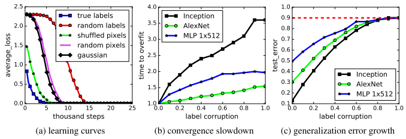

<a href="https://arxiv.org/abs/1611.03530">
Understanding deep learning requires rethinking generalization
</a>
<a href="https://arxiv.org/abs/1706.05394">A Closer Look at Memorization in Deep Networks</a>
<a href="https://dmitryulyanov.github.io/deep_image_prior">Deep Image Prior</a>
<div class="col col-12">
    
</div>

<p>Learning process: Learn pattern --> Memorize noise</p>